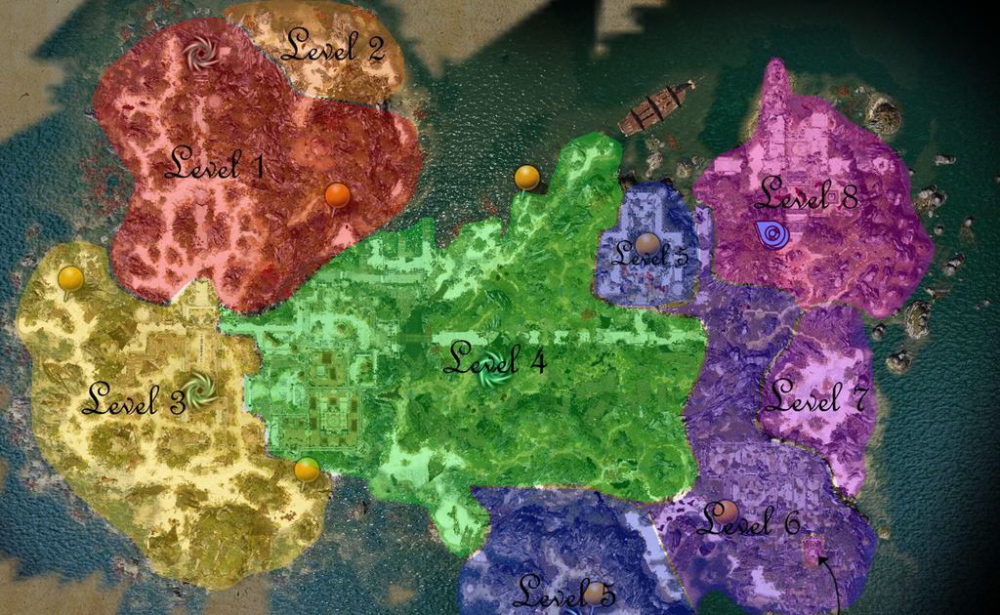
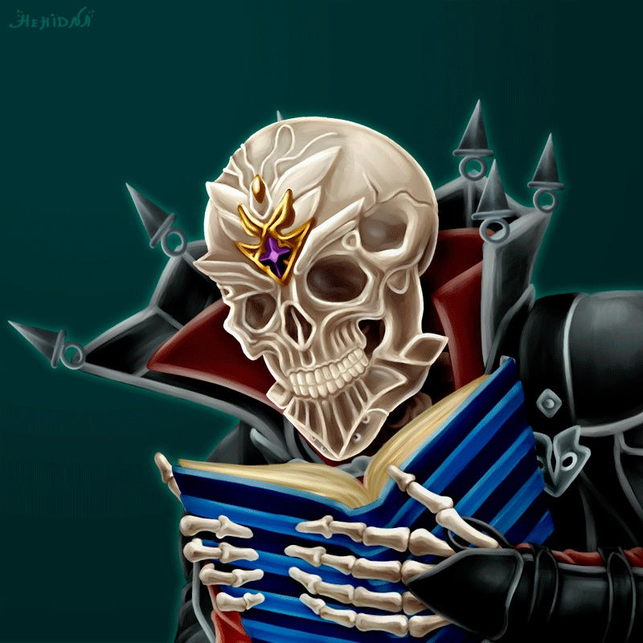

In 1242 AD, the use of Source magic has been
forbidden as a danger to the world, for when
it is used, the voidwoken follow shortly behind.
Sourcerers are rounded up by the Divine Order—now under the authority of Lucian's son,
Alexandar, following his father's death—and taken to Fort Joy on Reapers' Eye, the former bastion of the
Sourcerer King Braccus Rex, for the safety of Rivellon.
r grander future ahead.

Unknown to those who have been collared and set aboard the ships to the island,
this journey does not
merely result in ostricision and incarceration, but a far more sinister fate meets
many of those who land upon
its shores.
For a small number of the taken, there is a fa
Unknown to those who have been collared and set aboard the ships to the island,
this journey does not
merely result in ostricision and incarceration, but a far more sinister fate meets
many of those who land upon
its shores.
For a small number of the taken, there is a fa